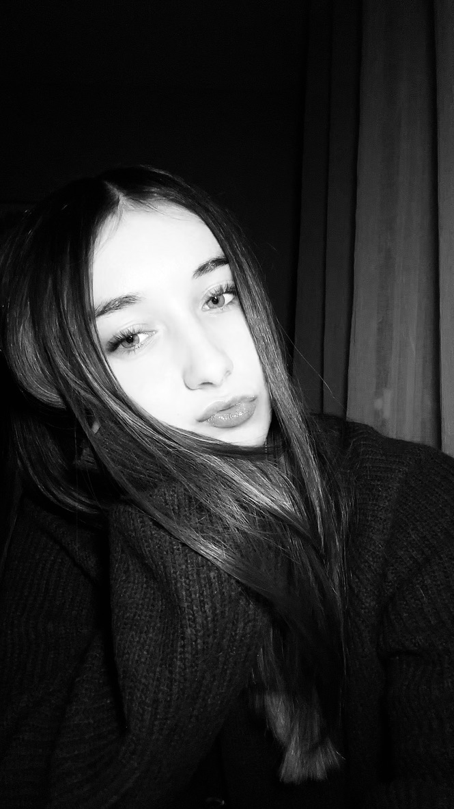

Instant K Photo
Des images authentiques, dans vos moments vrais.
Séances en extérieur & à domicile (à venir) — les
weekends, de
l'Eure au Calvados.
Que vous souhaitiez un portrait en exterieur, une séance chez vous ou simplement garder un beau souvenir en solo, entre amis ou en couple, je me déplace dans toute l’Eure et la Normandie pour capturer des moments vrais, à la lumière naturelle.
On marche et on échange. C’est comme ça que naissent des photos vraies. À partager sur Instagram, à mettre sur LinkedIn ou simplement à encadrer chez vous.
Quelques jours après la séance, vous recevez une galerie pour choisir vos photos préférées. Une fois votre sélection faite, je retouche vos images avec soin et vous les livre dans leur version finale sous une à deux semaines.
En savoir plus
L'offre commence à partir de 50€
Choisir ma formule📍 Je viens jusqu'à vous !
Déplacement offert : Dans un rayon de 20 km autour de Brionne (secteurs Bernay, Le
Neubourg, Montfort-sur-Risle, Beaumont-le-Roger).
Toute la Normandie : Je me déplace également vers Évreux, Rouen, Caen, Deauville...
Contactez-moi pour établir un devis personnalisé.
Vous rêvez d'une séance photo dans votre cocon ? Je prépare actuellement de nouvelles formules pour vous photographier chez vous, dans votre univers. Vous pourrez choisir entre la douceur de la lumière naturelle pour des clichés spontanés et pleins de vie, ou l'installation de mon studio mobile pour un rendu plus abouti et intemporel.
Disponible le samedi et dimanche, dans l'Eure et toute la Normandie.
Contactez-moi
par mail ou sur Instagram !